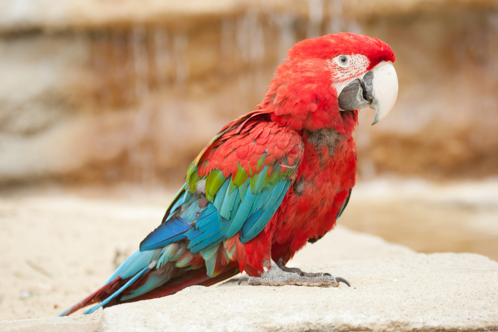

| Попугай |
|  |
| Научная классификация |
|
| Внешние ссылки |
| Wikipedia |
|
Добавить закладку
|
Попугай
Общие сведения
Попугаевые (лат. Psittacidae) — семейство птиц отряда попугаеобразных. Включает около 330 видов. В России попугаи впервые появились, вероятно, в 1490 году: посол римского короля Максимилиана Юрий Делатор преподнёс подарки великой княгине Софье Фоминичне «птицу попагал и сукно серо».
Слово попугай впервые в письменных источниках упоминается в Описи имущества Бориса Годунова в 1589 году.
Содержание дома
Обустройство клетки
Разбираясь в вопросе как ухаживать за попугаем правильно, вы поймете, что на пернатом питомце нельзя экономить. Выбирайте для него будущий домик, изготовленный из качественных материалов. Не стоит покупать клетку с покрашенными краской прутьями: пернатые любят ее сгрызать и проглатывать, из-за чего часто случаются отравления. Клетка не должна быть тесной, ее размеры должны давать возможность питомцу свободно расправлять крылья и перепархивать с места на место, не задевая крышу и стенки. Лучшей формой для апартаментов является прямоугольная, так как в круглой клетке птицы часто теряют ориентацию в пространстве.
Важными атрибутами каждой клетки являются:
- 2-3 кормушки для различных видов корма
- Поилка
- Жердочки
- Лесенки, качели, зеркальце, канатики и другие игрушки
- Минеральные подкормки в виде мела, сепии, минерального камня
Кормление
Зерно — основа рациона птицы. Его подсыпают в кормушку каждый день небольшими порциями (не более 1 ч. л.). Желательно не ограничиваться одним видом зерен. Смеси из семян можно покупать в зоомагазине или готовить их самостоятельно.
В меню должны присутствовать:
- Просо
- Конопляное семя
- Подсолнечник
- Кунжут
- Овес
- Льняное семя